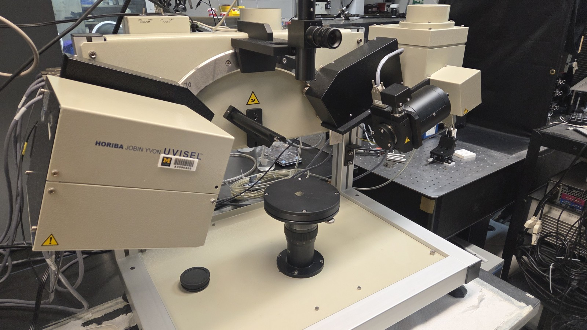
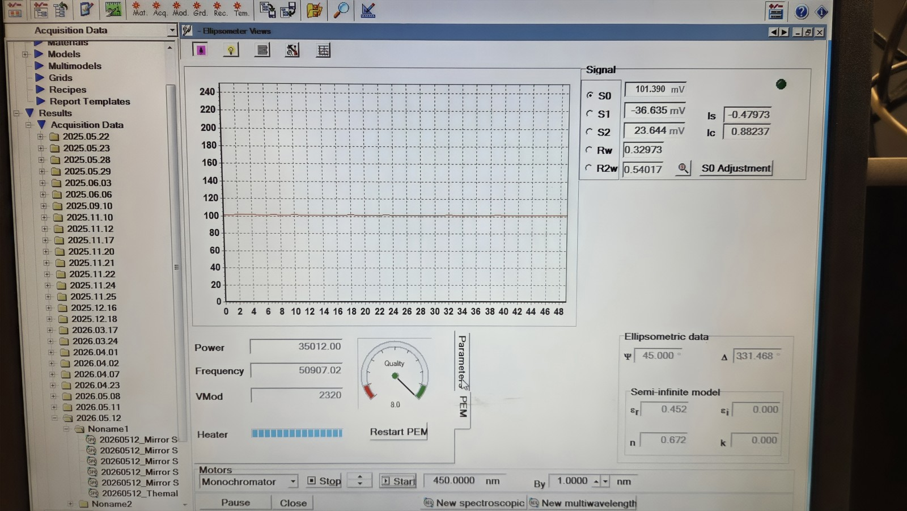
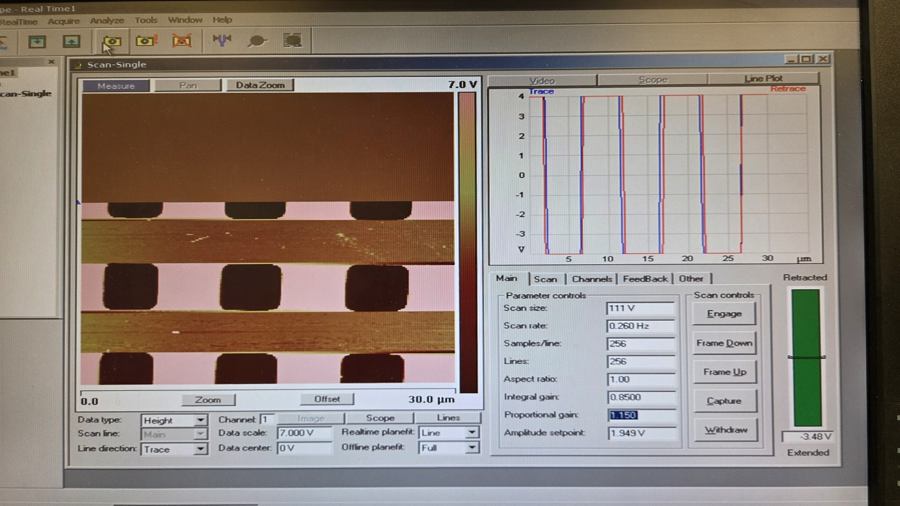
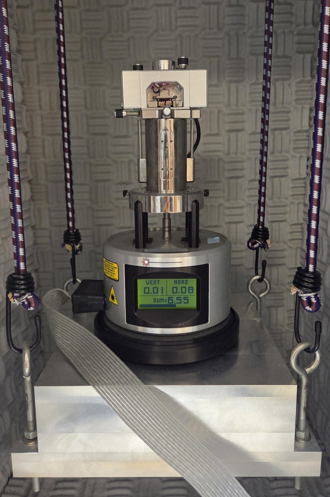

Research.
At DAEYANG the interface was something I could hold in tweezers. Here it's a few nanometers thick and I need an instrument to know it exists at all.
Maldonado Group
active
Ann Arbor, MI
The Maldonado Group works on electrochemistry and semiconductor materials under Prof. Stephen Maldonado. I joined in April 2026 as an undergraduate researcher on the thin film side.
My work so far is metrology: measuring how thick a deposited layer actually came out, and reading how it formed. Ellipsometry gives thickness and optical constants by measuring how polarized light changes on reflection from the film. AFM gives the surface itself — roughness, and whether a layer grew uniformly or in islands. Run together, they answer a question a deposition recipe alone can't: not what should have landed, but what did.
I'm also training on atomic layer deposition, which sits on the other side of the same question. ALD builds a film one self-limiting cycle at a time, so thickness is set by cycle count rather than by time or flux. It's the deposition method with the most direct relationship to measurement, which is why I wanted it.
Alongside the instrument work I keep the documentation — setup conditions, baselines, and results, recorded so a measurement can be repeated rather than remembered.



